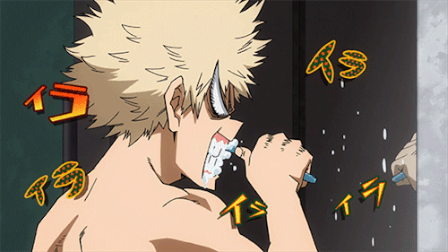

Animatie spalat pe dinti, cu buton.

Care e stilul tau preferat de spalat pe dinti?
Pick up your weapon and fight !
Lance vrajita
Potiune magica
Bici fermecat
AddElement si removeElement
Alert de input actionat de buton de tip input
Bibliografie
- https://www.scienceabc.com/eyeopeners/whats-the-difference-between-all-those-different-types-of-toothpaste.html
- https://www.nwradu.ro/2013/09/misterele-pastei-dinti/
- http://www.retail.ro/articole/rsecomandari/lucruri-pe-care-nu-le-stiai-despre-pasta- de-dinti-570.html
- https://ro.wikipedia.org/wiki/Past%C4%83_de_din%C8%9Bi
- >https://www.medici-stomatologi.ro/infodent/ce-contine-o-pasta-de-dinti-